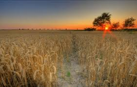
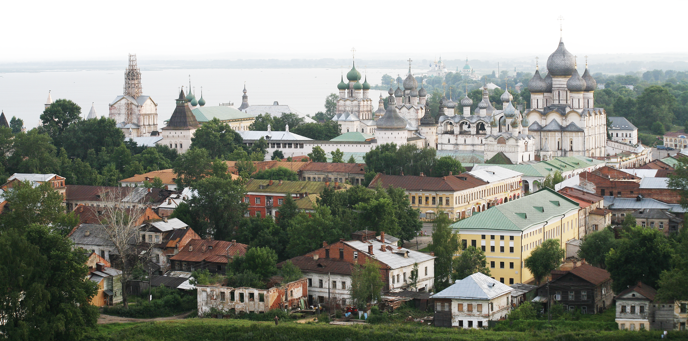
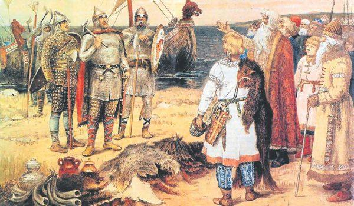
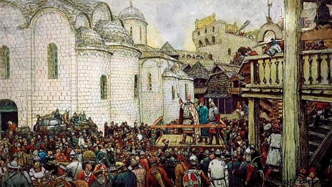
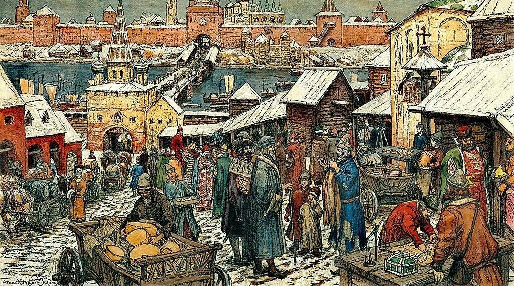
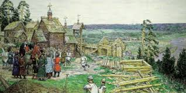
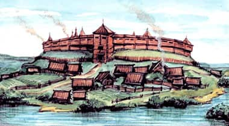
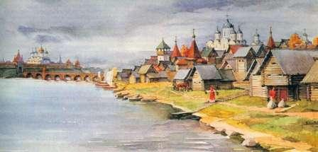
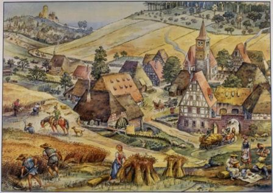
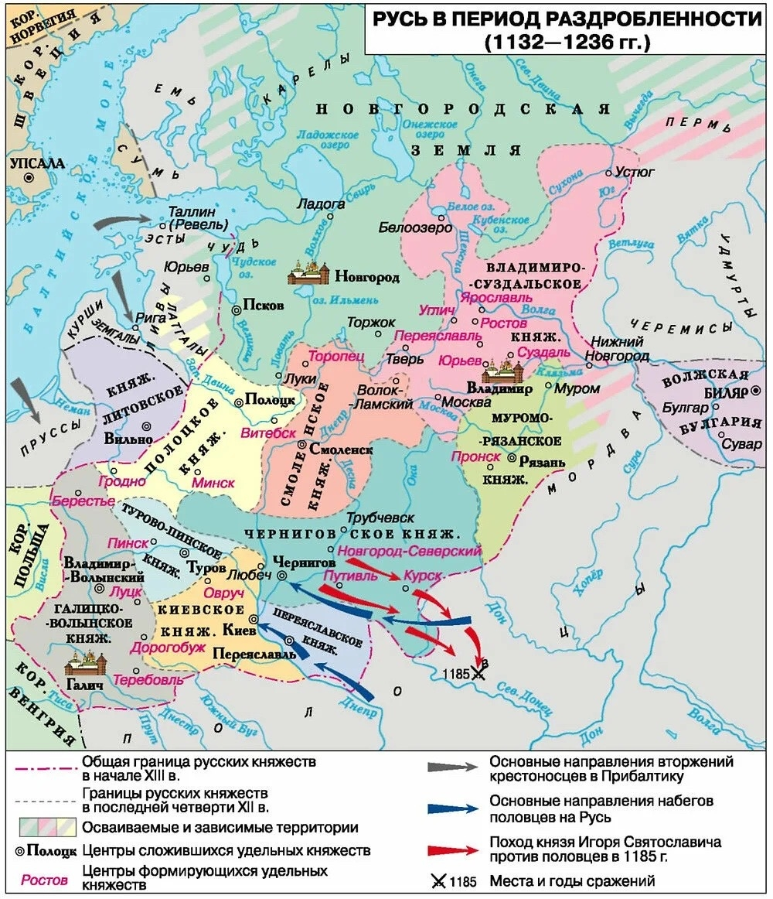

О Древней Руси в те года
До 1132 года Киевской Руси удавалось сохранять относительное единство под властью великих князей. Однако после смерти Мстислава Великого, сына Владимира Мономаха, центробежные силы взяли верх. Сыновья и внуки Мономаха вступили в бесконечную череду междоусобиц, и Киев быстро утратил свою роль реальной политической столицы, оставшись лишь символом былого величия.
Причины раздробленности
- Распад не был случайностью — на это были веские причины:
- Натуральное хозяйство: Каждый регион сам обеспечивал себя всем необходимым, и торговые связи между городами ослабли.
- Рост городов и боярства: Местные элиты в Новгороде, Владимире и Галиче окрепли. Им было выгоднее иметь своего князя «под рукой», чем подчиняться далекому Киеву.
- Упадок пути «из варяг в греки»: Главная торговая артерия страны заглохла из-за набегов половцев и крестовых походов, которые открыли новые пути в Европу.



Три пути развития
- В результате распада сформировались три мощных центра, каждый из которых предложил свою модель жизни:
- Северо-Запад (Новгород): Путь демократии и торговли. Здесь власть принадлежала не князю, а общегородскому собранию — Вече.
- Северо-Восток (Ростово-Суздальская земля): Путь сильной княжеской власти. Именно здесь закладывались основы будущего Московского государства
- Юго-Запад (Галицко-Волынская земля): Путь состязания князя и богатого боярства, ориентированный на тесные связи с Центральной Европой.
Итоги периода
Несмотря на политический распад и ослабление обороноспособности перед лицом будущих кочевников, XII век стал временем культурного расцвета. Строились белокаменные храмы, писались летописи, осваивались новые земли. Русь не исчезла — она превратилась в созвездие самостоятельных государств.
Новгородское княжество
Новгородская земля была уникальным явлением в истории Древней Руси. В то время как в других княжествах власть передавалась от отца к сыну, а воля князя была законом, новгородцы построили настоящую средневековую республику. Огромные территории, раскинувшиеся от Балтики до Уральских гор, не знали ужасов постоянных набегов кочевников, что позволило региону сосредоточиться на накоплении богатств и развитии гражданских свобод. Здесь не князь владел землей, а городская община диктовала условия приглашенным военачальникам.

Политическая жизнь города кипела на берегах Волхова. Центром управления было Вече — шумное собрание свободных горожан, где решались вопросы войны, мира и налогов. Однако за громкими выкриками на площади скрывалась тонкая работа «Совета господ», состоявшего из богатейших боярских фамилий. Система сдержек и противовесов была доведена до автоматизма: выборный посадник ведал судом и администрацией, тысяцкий руководил ополчением, а архиепископ хранил городскую казну и государственную печать. Даже князя здесь называли лишь «наемным менеджером», с которым заключался строгий контракт. Если правитель нарушал условия договора или пытался узурпировать власть, его «выпроваживали» из города, указывая «путь чист».

Экономическим фундаментом Новгорода была международная торговля. Город фактически являлся главными воротами Руси в Европу, будучи ключевым партнером Ганзейского союза. Склады ломились от дорогого сукна, вина и металлов из немецких земель, которые обменивались на бесценную северную пушнину, мед и воск. Это богатство породило уникальную культуру: Новгород был одним из самых грамотных городов средневековой Европы. Обычные ремесленники, торговцы и даже женщины вели активную переписку на бересте, обсуждая бытовые дела, долги и семейные новости. Именно эта независимость, грамотность и торговая мощь позволили Новгороду веками сохранять свою идентичность, пока в XV веке окрепшая Москва не положила конец вольному республиканскому строю.
Краткая информация
- Столица - Великий новгород
- Форма правления - Боярская (феодальная)
- Высший орган власти - Вече
- Годы независимости - с 1136 по 1478
Ростово-Суздальское княжество
Ростово-Суздальское княжество, позже ставшее Владимиро-Суздальским, представляло собой суровый, но богатый край «междуречья» Оки и Волги. Отрезанный от южных степей густыми лесами, этот регион стал идеальным убежищем для славянских переселенцев, бежавших от набегов кочевников. Здесь, вдали от старых киевских традиций, формировался совершенно новый тип власти — самодержавный и волевой. Князь в этих землях не просто правил, он выступал как колонизатор и строитель: возводил города в «чистом поле», распахивал плодородные черноземы (ополья) и брал под контроль ключевые речные пути.

Политическое лицо региона определили выдающиеся правители из династии Мономаховичей. Юрий Долгорукий первым превратил этот далекий край в мощную силу, активно вмешиваясь в дела Киева, но именно его сын, Андрей Боголюбский, совершил революционный шаг. Он перенес столицу во Владимир, отказался от борьбы за старый Киев и провозгласил приоритет своей личной власти над волей боярства. При его преемнике, Всеволоде Большое Гнездо, княжество достигло пика своего могущества: его влияние распространялось от Новгорода до Волжской Булгарии, а само название «Великое княжение Владимирское» стало главным титулом на всей Руси.

Культурный облик Северо-Востока — это торжество белокаменного зодчества. Суровый и величественный стиль местных храмов с их тонкой резьбой по камню символизировал божественную природу княжеской власти. Это был край воинов и пахарей, где в условиях постоянного вызова со стороны природы и соседей ковался характер будущего Московского государства. Именно политические традиции Суздаля и Владимира — жесткая централизация, сильная вертикаль власти и опора на служилых людей — легли в основу того фундамента, на котором спустя столетия выросла Российская империя.
Краткая информация
- Столица - Ростов, Суздаль, с 1157 - Владимир
- Форма правления - Наследственная монархия
- Высший орган власти - Князь
- Годы независимости - с 1132 по 1243
Галицко-Волынское княжество
Галицко-Волынская земля, раскинувшаяся на плодородных черноземах предгорья Карпат, была самым западным и, пожалуй, самым европейским по своему духу регионом Древней Руси. Благодаря удачному расположению на пересечении важнейших торговых путей из Византии и Востока в Польшу, Венгрию и Германию, это княжество стало сказочно богатым. Однако богатство региона строилось не только на транзите: Галицкая земля обладала уникальным ресурсом — залежами соли, которая в Средневековье ценилась на вес золота. Огромные доходы от добычи соли и экспорта хлеба сделали местное боярство настолько могущественным, что оно на равных спорило с князьями, превращая политическую жизнь региона в бесконечную борьбу за влияние.

История этого края — это история ярких личностей, пытавшихся объединить строптивые земли. Роман Мстиславич первым смог слить Галич и Волынь в единый кулак, создав мощный противовес Киеву. Его сын, Даниил Романович (Галицкий), стал одной из самых масштабных фигур эпохи. Ему удалось не только восстановить единство земель после смут, но и вести тонкую дипломатическую игру между Востоком и Западом в условиях монгольского нашествия. Даниил был единственным из русских правителей, кто принял от Папы Римского королевский титул, надеясь на помощь Европы в борьбе с Ордой. Под его властью Галич и Холм превратились в блестящие культурные центры, где православные традиции переплетались с элементами готики и романского стиля.

Особенностью Галицко-Волынской модели развития стал постоянный диалог и конфликт с западными соседями. В то время как северные земли Руси были сосредоточены на борьбе с кочевниками или внутренней колонизации лесов, Юго-Запад был полноценным участником европейской политики. Рыцарские турниры, католические миссии и тесные династические браки с европейскими королевскими домами — все это было частью повседневности. Несмотря на трагическую судьбу и последующий раздел земель между соседями, Галицко-Волынская Русь оставила после себя богатое наследие, став мостом, через который западные идеи и культура проникали на русские земли.
Краткая информация
- Столица - Галич, позже - Холм и Львов
- Форма правления - Монархия, ограниченная боярами
- Высший орган власти - Князь
- Годы независимости - с 1139 по 1340
Заключение
Период удельной раздробленности часто называют «темным временем», но именно он заложил фундамент будущей России. Три главных центра — Новгород, Владимир и Галич — показали три разных пути развития:
Новгородское княжество доказало, что Русь могла быть демократической и торговой, ориентированной на Европу.
Владимиро-Суздальское княжествовыковал модель сильной централизованной власти, которая позже помогла объединить страну вокруг Москвы.
Галицко-Волынское княжество стал уникальным примером синтеза восточнославянских традиций и европейской рыцарской культуры.

Несмотря на политические границы и междоусобицы, эти земли сохраняли общее культурное пространство, единый язык и веру, что в конечном итоге позволило восстановить единое государство.